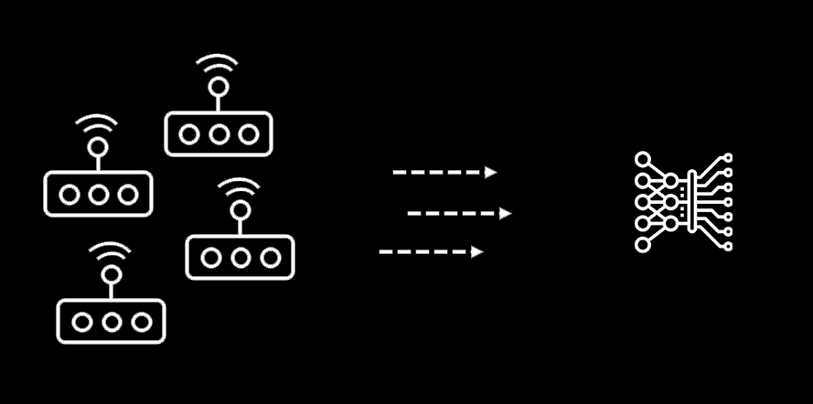

Problem Statement
The responsibility of providing enhanced solutions to ensure public safety has become significant throughout the world. Many instances are getting filed on the bomb blast, gun fires, etc, especially in public places like schools, shopping
malls, etc. In real-time, alerting the police or corresponding department in case of Bomb Blast or Gun Fire is not very instant which in turn impacts the time taken for performing the countermeasure activities. The recorded cases say,
It is actually taking huge time for someone in the zone to reach out to the police for intimating, which should be actually avoided. Considering the public safety in mind, I have published this article which provides the solution by alerting
the concern team/person with the help of IoT and machine learning concepts in an instant manner.
Technical Solution
Here I have proposed a hybrid solution that works with the combination of IoT devkit and Machine learning algorithms to ensure we develop the enhanced alert system for public safety. On top of that, given a brief of using a machine learning
algorithm for video surveillance to ensure the safeness.
IoT with Machine Learning Solution
Internet of Things(IoT) is a device connected to the Internet with the ability to collect and exchange data from users or environments with no human intervention. IoT allows objects to be sensed and controlled remotely across existing network
infrastructure, creating opportunities for more direct integration between the physical world and computer-based systems. In our solution, we have chosen the MXChip IoT DevKit, which can be used to develop and prototype Internet of Things
(IoT) solutions leveraging Microsoft Azure services. It includes an Arduino compatible board with rich peripherals and sensors
The IoT DevKit MXChip is enabled with a microphone which shall be used to calculate the noise level in the environment. AudioClassV2 class in the C++ program has to be installed in the IoT device to read the noise level and to do the necessary
action. The IoT kit needs to be configured to read the sound decibel levels on a regular basis and the recorded values have to be stored in a database so that we can come to a conclusion on the sound levels recorded in the particular area
by analyzing the average decibels recorded.
With the above step, we calculate the threshold value on the sound decibels that can be set for a particular location. At any point, if the decibel sound level is surpassing the threshold value, then the device data will be shared with the
Azure IoT Hub as an intimation message.
At this stage, the Azure Event Grid and App Logic comes into the picture, which enables you to react to events in IoT Hub by triggering actions in your downstream applications. Our end goal is to create an alert system, which sends an email/SMS/call
to the concerned team on any abnormal activities. The app logic will have the code logic to check for the level of decibel values and create an action to email using SendGrid or Outlook. The event needs to be subscribed to by the IoT Hub
so that the event will be triggered on any abnormal activity identified in the IoT devices connected with the Hub.

Maximized Solution
Creating an alert system, with just measuring the decibel levels won’t be an ideal solution all the time, as sometimes due to other environmental factors the sound level may increase or decrease. So involving stream analytics with a machine
learning model, helps us to perform the prediction which considers different factors for making the decision of the sound volume and raises the alert only in the case of abnormal activity.

Video Surveillance Alert System Using Machine Learning Solution:
CTo identify the abnormal activities in the video frames, it requires to relate the video frames in the past and the current to predict for the unprecedented activities in the video frame. Considering the nature of the required machine learning
model, Long Short-Term Memory (LSTM) shall be chosen for implementation which is of a type of recurrent neural network (RNN). It is proposed to use deep learning mechanisms in the unsupervised learning architecture using SpatioTemporal
auto-encoder for performing the implementation of abnormal activity in the broadcasted video.
In the next step, we will be training the machine learning model with the sample video of the bomb blast and gunshot happening videos. After a considerable number of epochs, the machine learning model will become capable to identify such events
in the video which is getting recorded in the surveillance camera. Convolutional Neural Network(CNN) shall be involved in processing the image frames generated from the video blocks.
On top of that, we will be using the written app logic to perform the intimation to the user group configured.